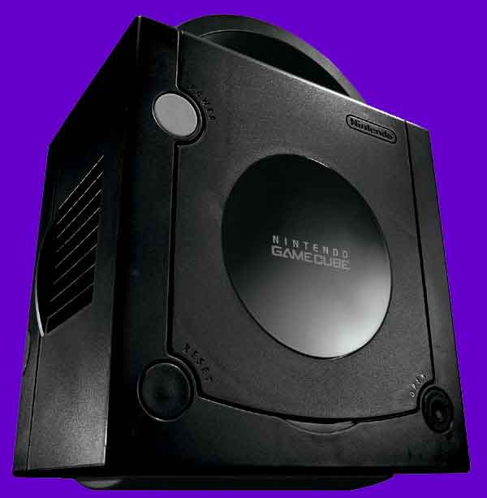

A strong competitor in the on-going console wars, the Nintendo GameCube is the first of its kind - it uses 8cm diameter optical discs, which have proved to be more robust than normal CD's. They also take down storage space because they are so small. It also enables the console to be the smallest (Next Generation Console -NGC) out of the three (Playstation2 and Xbox making the three). It measures in at: 11.4cm (H) x 15cm (W) x 16cm (D).
The GameCube was the first Nintendo console to feature optical disks, while up until then, the cartridges (or GamePak's) were thought to be the way of the future. The GamePak's downfall, sadly was that they were large in size and expensive to produce. The optical disks are based on Matsushita's Optical Disc Technology and can hold up to 1.5 GB of data (roughly 1500 MB).
The GameCube features four controller port slots, two memory card slots, Analog and Digital Audio/Video output ports, two serial and one parallel high-speed ports and a power supply adapter port.
Just recently, the GameCube took advantage of the popular online gaming feature and released two add-on adapters for playing games across the internet - a 56kbps dial-up modem and a broadband modem. It also has a GameBoy add-on which slots underneath the console, enabling GameBoy games to be played on the TV. All of these add-on's connect via the high-speed ports.
Also recently, the peripheral technology advanced one more step in providing the ultimate gaming experience by creating the WaveBird (featured on the control web page). This features a remote control pad which sends a signal to the receptor plugged into the GameCube console itself. The signal lasts for up to 20m, and can penetrate walls and glass. There is also the option to change the frequency of the transmission up to 16 times so multiplayer options are not a problem.
The GameCube consists of a hefty 485Mhz processor which can rip through large chunks of data, and provide crisp, crystal clear graphics and CD-quality sound to ensure the player has the ultimate gaming experience. The size of the disk and amount of available memory combined decrease loading times for the games. On-board image processing functions the GameCube can boast are: Fog, Subpixel Anti-aliasing, 8 Hardware Lights, Alpha Blending, Virtual Texture Design, Multi-texturing, Bump Mapping, Environment Mapping, MIP Mapping, Bilinear Filtering, Trilinear Filtering, Anisotropic Filtering, Real-time Hardware Texture Decompression (S3TC), Real-time Decompression of Display List, HW 3-line Deflickering filter.